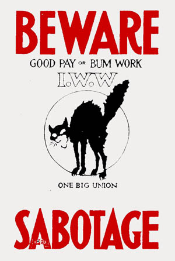

Direct Action and Sabotage
By X344543, August 11, 2011.
The IWW has been associated with many things, including Direct Action, specifically direct action at the point of production -- which means workers acting collectively and democratically to assert their power in the workplace -- as opposed to political action at the ballot box or acting as an armed vanguard seeking to capture state power through force of arms.
One specific form of direct action (by no means the only such form) is Collective Withdrawal of Efficiency, sometimes better known by the unfortunate and controversial term Sabotage. Sabotage is known by many other names, such as "Ca-canny", "Wobbling the Works" (derived from "Wobbly"), or even (more recently) "Monkeywrenching" (derived from Edward Abbey's famous book, The Monkeywrench Gang, which helped inspire the formation of the radical environmental movement, Earth First!, which itself also derives much cultural iconography from the IWW).
Despite what you may have heard, sabotage is not destruction of property or machines (and the IWW does not endorse or condone such actions), nor does the term originate from workers placing their wooden shoes or "sabots" in the gears of machinery to prevent the machines' operations (despite what Kim Catrell's line of dialog in Star Trek VI: The Undiscovered Country inaccurately suggests, no matter how favorably).
Sabotage did not originate from workers throwing their wooden sabots (shoes) into machines to stop them. In fact, the word has a much less romantic origin. The wooden sabots sometimes worn by the working class in the early industrial age made their walking inefficient. Early attempts at workers' resistance to automation by their employers did on occasion involve property destruction, but such attempts took place much earlier than the formation of the IWW.
Sabotage is the collective withdrawal of efficiency by the workers at the point of production. While the IWW as an organization never officially endorsed sabotage, various IWW members (including Elizabeth Gurley Flynn and Walker C. Smith) advocated it individually. Various IWW publications also suggested it, if not openly advocating it as a tactic. Further, IWW artists and cartoonists frequently utilized the Black Cat (sometimes known as "Sab-cat" or "Sabo-tabby" (the latter being a play on words, no doubt) and the Wooden Shoe to symbolize direct action, including (but not always) sabotage.
 The reasoning behind the use of the wooden shoe, despite the often inaccurately quoted origins of its usage, is obvious.
The reasoning behind the use of the wooden shoe, despite the often inaccurately quoted origins of its usage, is obvious.
The black cat symbol itself has a colorful history. Originally the cat wasn't necessarily black, but (in the United States of America and England in particular) black cats tend to have sinister connotations. IWW's, speaking in code so as to not tip off the employers and their enablers would sometimes rework the old saying "letting the cat out of the bag" to mean taking collective action. IWW members of a specific industrial union, such as the Agricultural Workers Industrial Union 110, would sometimes be referred to as "110 cats". Elected IWW officials and union hall staff (back when the IWW had paid union hall staff, as they sometimes did in large industrial organizing campaigns) were sometimes known as "hall cats". The late Franklin Rosemont of Charles Kerr Publishing Company and author of the book, Joe Hill, the IWW, and the Making of a Revolutionary Working Class Counterculture (Kerr: 2003), has even suggested that the adoption of the term "cat" by beat poets and jazz musicians may directly derive from the IWW's use of the term!
It must be emphasized, however, that never did this mean the destruction of property or machinery, especially the machinery of production. To get an accurate account of what individual IWW members were actually calling for, it's best to go directly to the source:
- Sabotage: Its History, Philosophy & Function - Walker C. Smith (1913)
- Sabotage: the Conscious Withdrawal of the Workers' Industrial Efficiency - Elizabeth G. Flynn (1916)
While these documents clearly show what sabotage is and is not, they were not enough to prevent the employers from painting a much different picture of sabotage.
As Ralph Chaplin (who wrote the IWW / labor anthem "Solidarity Forever" and created many of the IWW's famous "silent agitator" cartoons, including the IWW sabo-cat) later recounted in his autobiography, Wobbly (pp. 206-07):
Even after the war was declared, [Big Bill Haywood] fought to the last to the last ditch for reprinting Elisabeth Gurley Flynn’s Sabotage...It was never reprinted. Saner counsel prevailed. Frank Little was voted down by the General Executive Board. Bill Heywood (sic) had his way again in the matter of proscribing the ‘Black Cat’ I was using rather freely in cartoons. My "Sab Cat" was supposed to symbolize the "slow down" as a means of "striking on the job."
The whole matter of sabotage was to be thrashed out thoroughly at our trial. There is no doubt that our advocacy of it as a class-war weapon con-tributed to the jury’s hasty and unanimous verdict of guilty. The evidence, as interpreted by the prosecution, was against us, but the facts in the case were not. Gurley Flynn’s pamphlet, for instance, was a brief restatement of the type of sabotage advocated by European anarchists and syndicalists from which the IWW had adopted only a few features applicable to conditions in the USA (emphasis added).
The word 'sabotage' is derived from the French word 'sabot', wooden shoe. in the France of the previous era wooden shoes were (allegedly) dropped into machines by striking workmen ready to walk off the job. In the course of time this practice was extended to the use of monkey wrenches, explosives, or emory powder.
The prosecution used the historic meaning of the word to prove that we drove spikes into logs, copper tacks into fruit trees, and practiced all manner of arson, dynamiting and wanton destruction (emphasis added). Thanks to our own careless use of the word, the prosecution’s case seemed plausible to the jury and the public. We had been guilty of using both the "wooden shoe" and the "Black Cat" to symbolize our strategy of "striking on the job." The "sabotage" advocated in my cartoons and stickerettes was summed up in the widely circulated jingle:
The hours are long, the pay is small So take your time and buck ‘em all.
We tried to show the difference between our sit-down and slowdown strategies and the kind of sabotage used by extremists in Continental Europe.
Because of the negative backlash, the IWW officially distanced itself from sabotage as a tactic in 1918 as evidenced by the following:
- Resolution Regarding Sabotage - IWW General Executive Board (1918)
However, this knowledge largely fell into the memory hole of time after the IWW declined significantly in the late 1950s and was largely forgotten (except by well read IWW members with thorough knowledge of the organization's history), and many latter day Wobblies, would-be Wobblies, and fans of the IWW openly celebrated both the iconography, concepts, and romance of "Sabotage". This is partly due to the IWW's somewhat tenuous connections to Earth First! from 1988-94.
Ironically, Earth First! (who adopted the sabo-tabby symbol as well as the concept of sabotage from the IWW) faced its own internal debate over a very specific tactic of "sabotage" known as "tree spiking", which involved driving large nails into standing trees in order to deter the cutting of them by loggers.
Although the tactic had been credited to the IWW (negatively, by the capitalist class), ironically it was an IWW member, Judi Bari -- who joined the IWW and Earth First! at approximately the same time, in late summer of 1988, who convinced some chapters of Earth First! to renounce the tactic in March 1990 as being potentially harmful to timber workers (whom Bari identified as potential allies in both the labor and environmental causes she championed).
While Earth First! as a whole (which doesn't have a quantifiable standard of membership) has never settled the question over tree spiking (some chapters still employ the tactic; others do not), the debate was started (in May, 1987, when a Cloverdale, California mill worker, who was not unsympathetic to Earth First!, was nearly killed when a spiked tree damaged the bandsaw he operated and nearly decapitated him) before Judi Bari joined either organization. Ironically the discussion originated within the pages of the IWW's official newspaper, the Industrial Worker (in the February 1987 issue) and led to a discussion within that publication and the IWW about Earth First! in general.
This discussion led to a coalition between Earth First! and the IWW in northwestern California in late 1980s and 1990s which resulted in a substantial growth in Earth First! and a major revival within the IWW that benefited both organizations. Oddly enough, a pro-Earth First! mill worker from Oregon and a close ally and friend of Bari's, Gene Lawhorn, who had come in contact with both the IWW and Earth First! during a strike at Roseburg Forest Products in 1987-88, had inspired Bari to lead Earth First! to renounce the tactic. In exchange, Lawhorn supported the Earth First!, Seeds of Peace, and IWW organized "Redwood Summer" campaign in summer of 1990.
In other words, the IWW's association with "sabotage" and the negative shadow vision of "sabotage" created by the IWW's mortal enemy, the capitalist class has in many ways come full circle and represents still one more turning point in the IWW's evolution!
Much of this rather complex and intertwined history is discussed in Redwood Uprisings, by Steve Ongerth.
While history repeated itself within both Earth First! and the IWW in a positive fashion, in some cases it also created its share of negative baggage. In 1993, some members of the IWW published a pamphlet titled How to Fire Your Boss, a Workers' Guide to Direct Action, whose author(s) -- either ignorant or dismissive of the 1918 resolution on sabotage -- carelessly and naïvely included a section titled "monkeywrenching" (utilizing the term commonly used by Earth First! for "sabotage" -- or "ecotage" as they sometimes call it). The aforementioned pamphlet, while popular among radical activists, has since been judged an irresponsible and ill thought out publication at best by most members of the IWW and should under no circumstances be considered official IWW literature or even something remotely endorsed by the IWW or any of its branches.
In conclusion, while the IWW may have a strong association with "Sabotage" (for better or for worse), the IWW's position on the tactic is that the IWW does not advocate (nor condemn) its usage. The IWW is, however, not opposed to workers collectively withdrawing their efficiency at the point of production if circumstances warrant it.